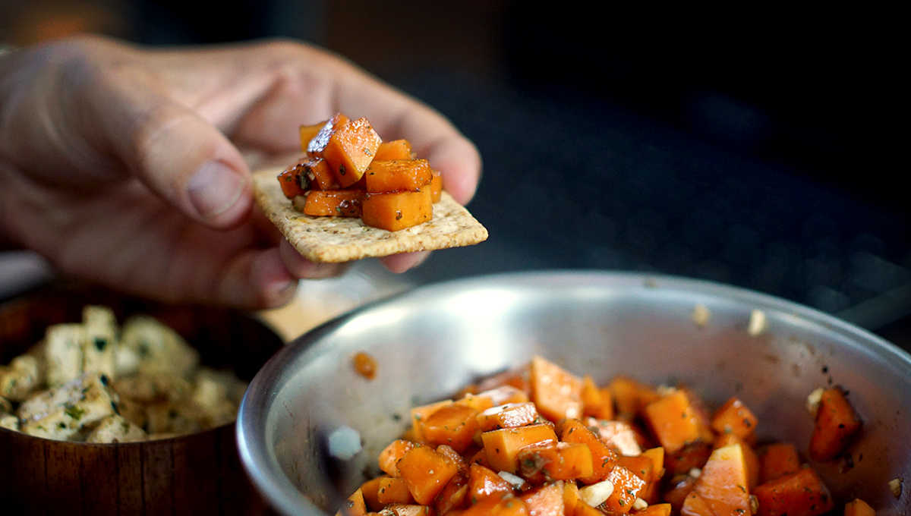

papaya bruschetta topping
2-3 people — 5 minutes
Before we arrived in the Marquesas, people made a point of telling us how difficult it was to find vegetables there. We heard that if we wanted tomatoes, we would need to get up at 0400 to get them at the market. We are early risers, but we lack the will to take the dinghy to shore in the dark. It's just as well, because others we met who had tried, came back empty-handed. In the Marquesas, most vegetables are brought in by supply ships, you can never be certain of what you're going to get. Potatoes, cucumbers, cabbages and eggplants we had plenty of, but vegetables like tomatoes, pumpkins, bok choy and salad greens were like rare pokemon.
We'd only ever made bruschetta topping with tomatoes, never thought of changing it for anything else. But then we thought, what looks like tomatoes? Papaya, sort of? They have a similar reddish tint, comparable texture too. Papaya is something Nuku Hiva has plenty of, and as it turns out, we prefer it over tomatoes now. Papaya is more firm and sweet, and pairs well with balsamic vinegar. We imagine it would taste great with mangoes too, it's something we may try when we get a craving again.
If something isn't available, or is too expensive where you are (hunting for raspberries in Japan comes to mind), swap it out for something else. Not every ingredient will work, but it's fun to try.
 papaya1
papaya1 olive oil30 ml
olive oil30 ml balsamic vinegar30 ml
balsamic vinegar30 ml dried basil15 g
dried basil15 g
bruschetta
- Peep skin from papaya, scoop out the seeds insides and cut the flesh into small cubes. NOTE: You can wash and dry the papaya seeds to make pepper! Or process them into juice with other fruits.
- Mix 30 ml (2 tbsp) of olive oil, 30 ml (2 tbsp) of balsamic vinegar, 15 g (1 tbsp) of dried basil and a pinch of salt together.
- Pour over cubed papaya and serve with homemade crackers.